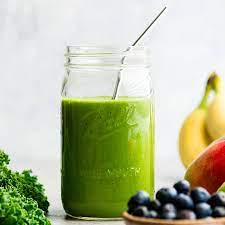
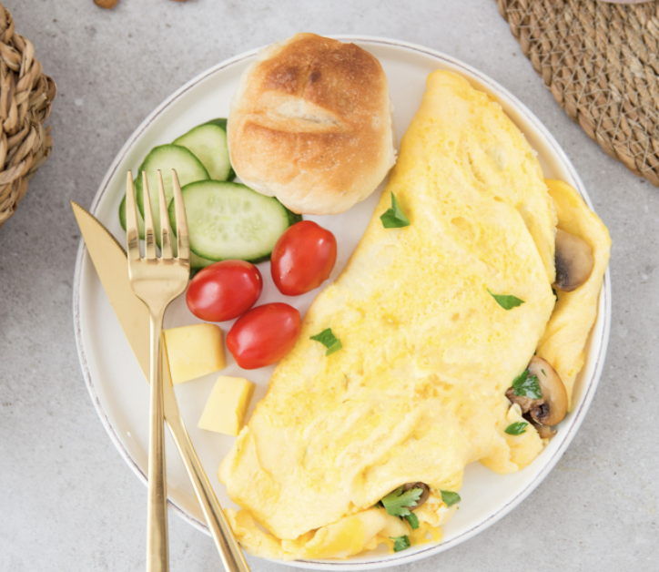
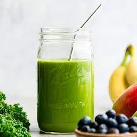
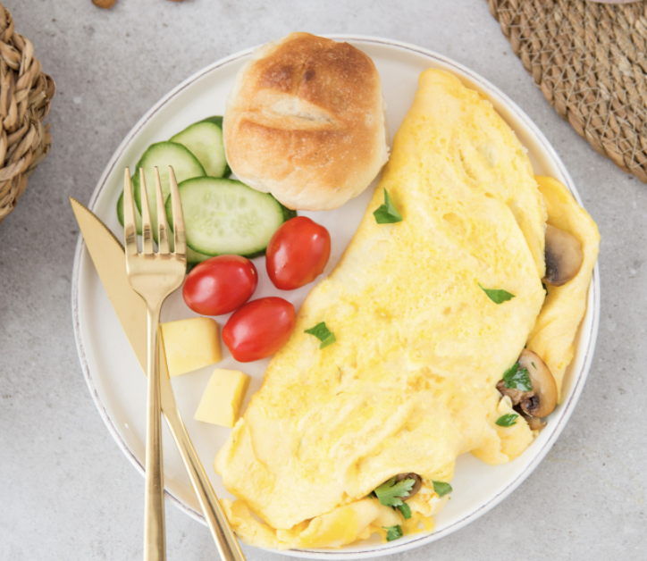
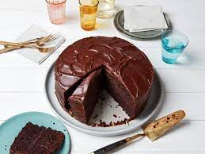
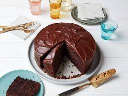

Katie's Kitchen
Hi! My name is Katie Valus. Welcome to my food blog! I am excited to share with you my favorite recepies and more about my lifestyle! I love delicious foods that are high in protein and make my body feel good, full, and fueld. Many of my recepies are gluten and dairy free. I hope you enjoy them as much as I do!


 

`


`  
